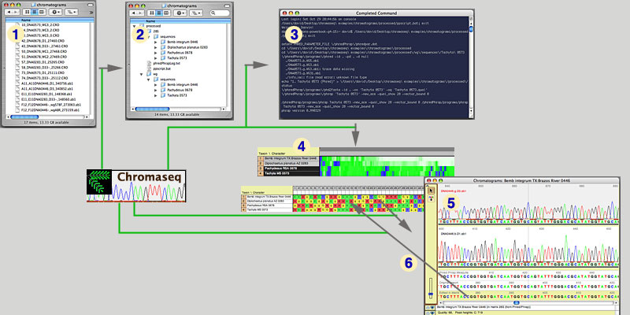

THIS IS A TEST VERSION OF CHROMASEQ. PLEASE DO NOT PUBLISH RESULTS BASED UPON IT WITHOUT PERMISSION OF THE AUTHORS.
Chromaseq: a Mesquite module for analyzing sequence chromatograms
The Chromaseq package allows one to organize a directory of chromatograms (1 & 2, below), assemble them into contigs (using Phred and Phrap, 3), import the consensus sequences into Mesquite (4), view the chromatograms for each sequence (5), and edit the calls in a chromatogram viewer (6). Chromaseq requires Mesquite 1.07 or later, as well as Phred and Phrap. See the "What Chromaseq Is Not" section for some comments on the limitations of Chromaseq.

The following sections provide information about Chromaseq:
- Overview gives a one-page tour of some of the features of Chromaseq, with images.
- Quickstart is a condensed guide to using Chromaseq, with many details missing, but if you really can't stand to read manuals, this is a good place to start.
- The Phred/Phrap with Chromaseq section describes how to install Phred and Phrap, and use Mesquite's features for automating these programs. It also describes Mesquite's tools for modifying the output of Phred and Phrap and import the consensus sequences into Mesquite.
- Viewing chromatograms in contigs and calling bases can be done in the Chromatogram Viewer
- How Chromaseq compares to other programs, and how they might interact, is described on the Sequencher & Others page.
- The Download page.
- Acknowledgements.
- How to cite Chromaseq.
- Frequently Asked Questions.
What Chromaseq Is Not
Chromaseq is not intended as a full-featured replacement to programs like Sequencher™ or Aligner™. Chromaseq was built by us for our personal needs in systematics. We obtain many sequences of a few genes from beetles and spiders; many of these sequences are high-quality, and don't require much processing other than assembly of the read, trimming, and changing a few base calls. However, the tedium of processing these many sequences, and the lack of integration of existing tools within a systematics framework, led us to develop a solution that worked for us. While it has many custom features for dealing with the sorts of sequence data one acquires typically in systematics, it does not have the many features one would want in a full chromatogram analysis package, including tools for handling difficult data.